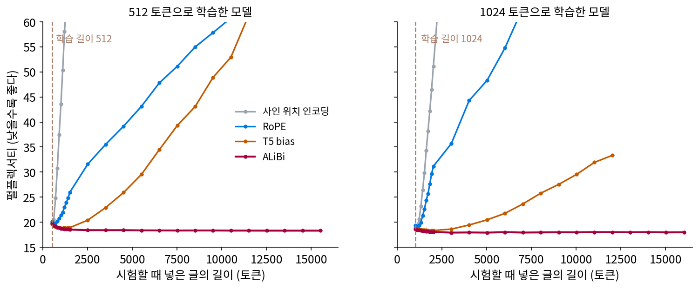
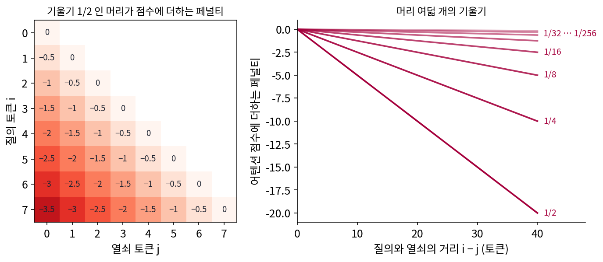
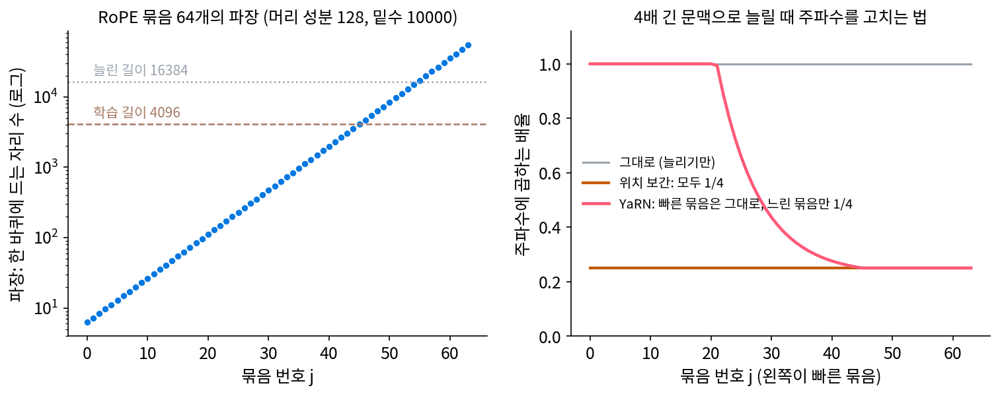
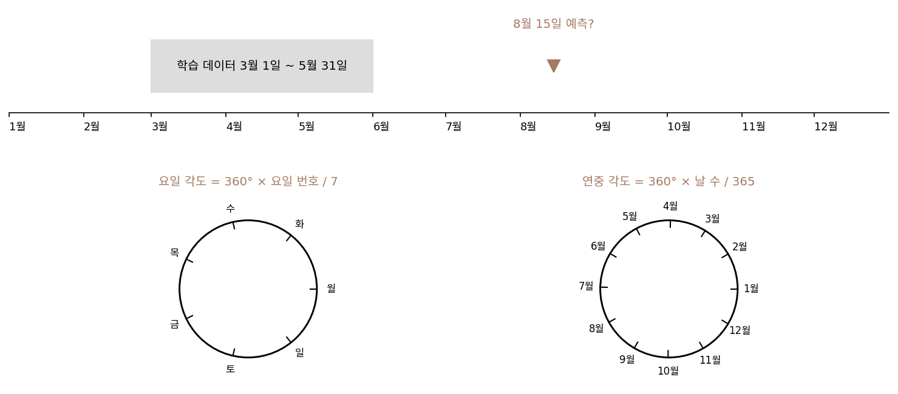
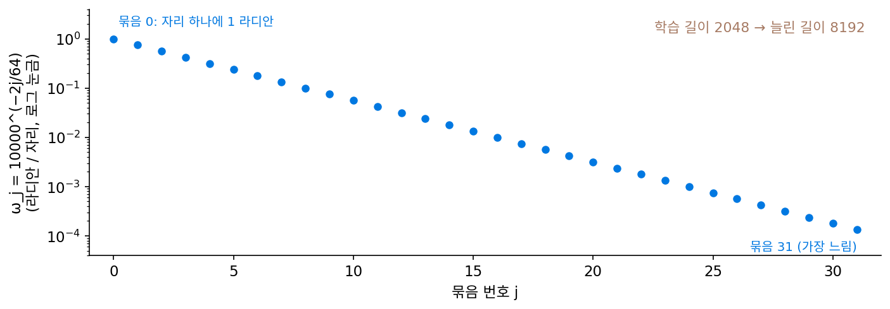
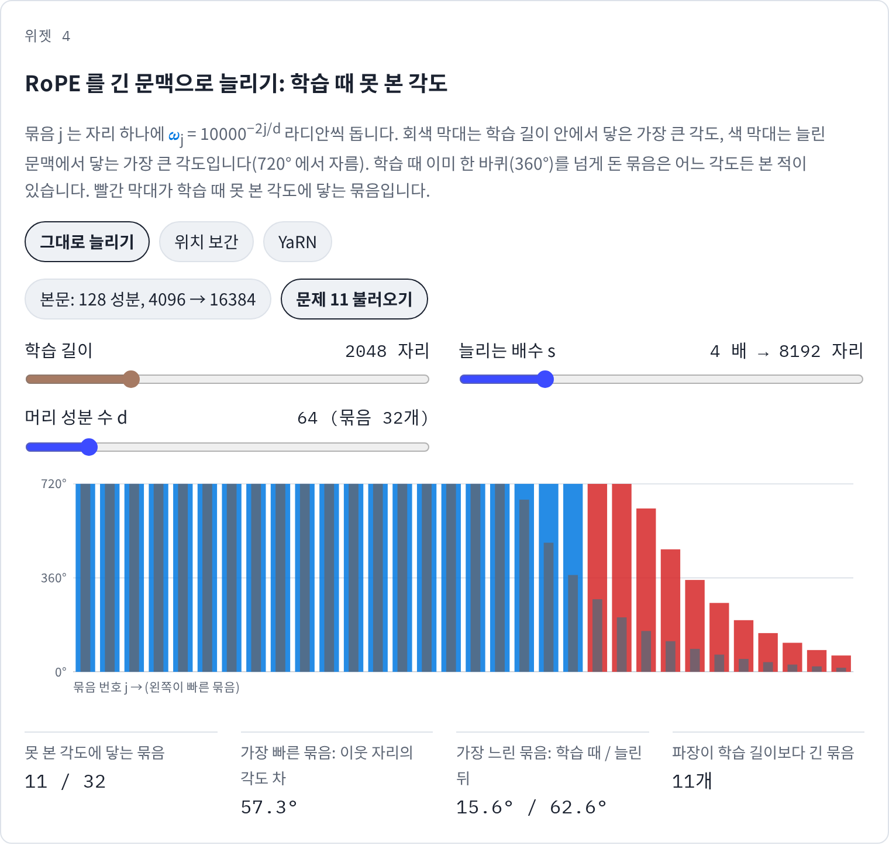
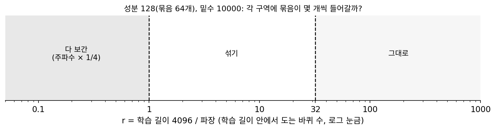

위치 인코딩 다시 보기: 사인 인코딩, RoPE, 시간 넣기
트랜스포머는 토큰의 자리 번호 m 을 sin(mωj), cos(mωj) 로 펴서 넣고, RoPE 는 질의·열쇠의 성분 쌍을 각도 mωj 만큼 돌리고, 디퓨전 모델은 타임스텝 t 를 같은 꼴로 펴서 블록마다 더한다. 묶음 j 마다 주파수(자리 번호가 하나 늘 때 도는 각도) ωj = 10000−2j/d 가 등비수열로 다르다. 숫자 하나를 주파수가 다른 물결 여럿으로 편다는 점에서 푸리에 특징과 같은 꼴이다. 그렇다면 푸리에 특징에서 본 일들, 넣은 주파수가 배울 수 있는 주파수의 폭을 정하고, 학습 때 보지 못한 값이 들어가면 망이 엉뚱해지는 일이 여기서도 일어날까? 언어 모델에게 학습 때보다 네 배 긴 글을 주면 무엇이 학습 때 못 본 값이 될까?
역사: 학습 길이를 넘으면 무너진다는 것을 재고, 위치 보간까지
2017년 트랜스포머 논문은 사인 위치 인코딩이 학습 때보다 긴 열에도 이어질지 모른다고 기대했다.
그 기대를 실제로 잰 것은 4년 뒤였다. 트랜스포머 이전의 순환 신경망 언어 모델은 짧은 글로 학습하고 긴 글에 쓰는 것이 보통이었지만, 트랜스포머 언어 모델은 학습할 때와 쓸 때의 글 길이를 같게 맞춰 왔다. 긴 문맥이 필요하면 긴 글로 학습해야 했고, 그만큼 비용이 들었다. 워싱턴 대학교의 프레스(Ofir Press)는 스미스(Noah A. Smith), 페이스북 AI 연구소의 루이스(Mike Lewis)와 함께 2021년 8월 「짧게 학습하고 길게 시험하기(Train Short, Test Long)」를 내놓았다(ICLR 2022). 그들은 영어 위키백과 글 약 1억 300만 토큰(WikiText-103)으로 같은 언어 모델을 학습시키되 위치를 넣는 방법만 바꾸고, 학습 길이보다 긴 글을 넣어 보았다. 사인 위치 인코딩으로 512 토큰을 학습한 모델은 학습 길이를 수십 토큰 넘길 때까지만 나아지다가 그 뒤로 나빠졌다. 펄플렉서티(다음 토큰을 평균 몇 개 후보 사이에서 망설이는지를 나타내는 값, 낮을수록 좋다)가 512 토큰에서 20.05 였는데 1012 토큰에서는 43.54, 2512 토큰에서는 132.41 이 되었다. RoPE 는 더 오래 버텼지만 2512 토큰에서 31.58 로 올랐다. 물결이 자리 번호가 커져도 정의된다는 것만으로는 긴 글로 이어 나가지 못했다.

그들이 내놓은 ALiBi(Attention with Linear Biases, 선형 바이어스를 더한 어텐션)는 위치 벡터를 아예 더하지 않는다. 질의와 열쇠의 내적으로 매긴 어텐션 점수에서 두 토큰의 거리에 비례하는 페널티를 뺄 뿐이다. 페널티의 기울기는 머리마다 다르고 학습 전에 정해 둔다. 머리가 여덟이면 1/2, 1/4, …, 1/256 이다. 기울기를 학습하게 한 시도는 긴 글로 이어 나가는 힘이 약했고, 1/2 에서 1/256 까지의 등비수열은 기울기 묶음 열 벌 남짓을 손으로 시험한 끝에 고른 것이다. 512 토큰으로 학습한 ALiBi 모델은 1만 5512 토큰에서도 펄플렉서티 18.31 을 냈다. 13억 파라미터 모델을 1024 토큰으로 학습해 2048 토큰에서 시험하면 2048 토큰으로 학습한 사인 모델과 펄플렉서티가 같았고, 학습은 11% 빨랐으며 메모리는 11% 덜 썼다.

ALiBi 는 학습 때부터 넣어야 하는 방법이라, 이미 RoPE 로 학습해 둔 모델의 문맥을 늘리는 데는 다른 길이 필요했다. 언어 모델의 문맥을 늘리려는 수요가 커지자, 메타(Meta)의 천서우위안(Shouyuan Chen)과 동료들은 2023년 6월 「위치 보간으로 큰 언어 모델의 컨텍스트 윈도우 늘리기」에서 RoPE 를 쓰는 라마(LLaMA) 모델에 학습 길이보다 긴 글을 그대로 넣으면 어텐션 점수가 아주 크게 튀어 모델이 무너진다고 보고했다. 그들의 처방은 거꾸로 가는 것이었다. 늘리는 대신 자리 번호를 줄여서, 긴 글의 자리들이 모두 학습 때 본 범위 안에 들어오게 했다. 1000 스텝 안쪽의 짧은 추가 학습으로 문맥을 3만 2768 토큰까지 늘렸다.
비슷한 무렵 인터넷 게시판 레딧에는 「NTK 를 고려한(NTK-aware)」 늘리기라는 글이 올라왔다. 모든 묶음을 똑같이 줄이면 빠른 묶음이 담던 가는 자리 정보가 사라진다는 것이 문제의식이었고, 그 이름은 푸리에 특징의 커널 분석에서 왔다. 글쓴이 펑보원(Bowen Peng)은 동료들과 2023년 8월 YaRN 을 내며 이렇게 적었다. 「RoPE 는 여러 면에서 푸리에 특징을 아주 닮았다.」 위치 정보는 1차원이고 RoPE 는 그것을 여러 물결로 펴니, 높은 주파수를 지우면 망이 가까운 토큰을 가르지 못하게 된다는 것이다.

긴 글을 넣고 펄플렉서티를 재 보는 거면 2017년에도 바로 할 수 있었을 것 같은데요. 왜 4년이나 걸렸어요?

트랜스포머 언어 모델은 쓸 때도 학습 길이만큼 잘라 넣었으니 더 긴 글을 넣을 일이 없었어요. 넣어 보려 해도 걸리는 게 있었고요. 어텐션은 토큰 쌍마다 점수를 매기죠. 글이 512 토큰에서 16,384 토큰으로 길어지면 쌍은 몇 배가 될까요?

길이가 32배니까… 쌍은 제곱이라 1024배요. 512² 이 26만 쌍 남짓인데 16,384² 은 2억 6천만 쌍이 넘어요. 머리마다 그만큼이요.

프레스와 동료들의 그림에서도 T5 bias 모델은 1만 3천 토큰 무렵 메모리가 모자라 멈췄어요. 재는 일 자체가 GPU 메모리에 막혔던 거예요.

위치 보간 때는요? 라마가 RoPE 로 학습돼 있었으면 ALiBi 로 처음부터 다시 학습하면 되잖아요.
라마 같은 모델을 처음부터 다시 학습하는 비용을 생각해 봐요. 천서우위안과 동료들이 찾은 것은 1000 스텝 안쪽의 짧은 추가 학습으로 끝나는 길이었어요.

자리 번호를 줄여 넣는 게 통했다면, 모델이 무너진 이유가 학습 때 본 적 없는 값이었다는 거네요. 그럼 RoPE 의 묶음 가운데 어느 것이 학습 길이를 넘을 때 처음 보는 각도를 만나는지 세어 볼 수 있을까요?
학습 길이 4096 을 16384 로
RoPE 로 학습한 모델 하나를 놓고 따져 보자. 머리 하나의 성분이 128개(묶음 64개), 밑수 10000, 학습 때 본 글의 길이는 4096 토큰이다. 묶음 j 는 자리 하나에 ωj = 10000−2j/128 라디안씩 돌고, 한 바퀴에 드는 자리 수, 곧 파장은 2π/ωj 다. 가장 빠른 묶음 0 의 파장은 6.3 자리, 가장 느린 묶음 63 의 파장은 54,410 자리다.
학습 길이 4096 보다 파장이 긴 묶음은 46 번부터 63 번까지 18개로, 학습 내내 한 바퀴를 다 돌지 못했다. 가장 느린 묶음은 자리 0…4095 에서 27.1° 까지만 돌았는데, 이 모델에 16,384 토큰짜리 글을 그대로 넣으면 108.4° 까지 돈다. 27.1° 와 108.4° 사이의 각도는 학습 때 한 번도 나온 적이 없다. 푸리에 특징의 장난감에서 학습 점 사이에 처음 보는 특징 값이 들어가자 출력이 엉뚱해진 것과 같은 일이 이번에는 자리 번호 쪽에서 일어난다. 학습 때 본 범위 밖의 입력으로 망을 쓰는 일을 외삽이라 한다.
위치 보간은 자리 m 대신 m/s(여기서 s = 16384/4096 = 4)를 넣는다. 가장 느린 묶음은 16,384 자리에서도 27.1° 까지만 돌아 학습 때 본 범위 안에 머문다. 대가는 빠른 묶음에서 치른다. 가장 빠른 묶음에서 이웃한 두 자리의 각도 차가 57.3° 에서 14.3° 로 줄어, 바로 옆 토큰과 그다음 토큰을 가르는 힘이 약해진다.
YaRN 의 「NTK-by-parts」는 묶음마다 다르게 한다. 학습 길이를 파장으로 나눈 r 이 1 보다 작은 묶음(학습 내내 한 바퀴를 못 돈 18개)은 위치 보간처럼 주파수를 4분의 1 로, r 이 32 보다 큰 묶음(학습 길이 안에서 32 바퀴 넘게 돈 묶음)은 그대로 두고, 그 사이의 묶음은 둘을 섞는다(라마 계열에 대해 논문이 고른 경계 1 과 32). 그러면 가장 빠른 묶음의 이웃 각도 차는 57.3° 그대로이고, 가장 느린 묶음은 16,384 자리에서 27.1° 까지만 돈다. 이렇게 늘린 문맥의 자리가 학습 때 본 각도 안에 들도록 자리 번호나 주파수를 줄여 넣는 방법을 위치 보간 (학습 때 본 각도 안으로 자리를 줄여 넣기 / position interpolation)이라 한다. YaRN 은 그것을 느린 묶음에만 하는 위치 보간이다.

ML에서: 디퓨전의 시간 넣기는 늘릴 일이 없다
디퓨전 모델도 타임스텝 t 를 트랜스포머의 사인 인코딩과 같은 꼴로 펴서 블록마다 더한다. 스텝 t 는 학습 때도 생성할 때도 같은 범위(예를 들어 0…999) 안에 있다. 성분 128개, 밑수 10000 으로 펴면 가장 느린 묶음은 스텝 999 에서 6.6° 만 돌지만, 생성할 때도 그 범위를 넘지 않으니 학습 때 못 본 각도가 생기지 않는다. 문맥을 늘려야 하는 언어 모델과 처지가 다르다. 시간 넣기가 왜 사인 인코딩을 쓰는지, 그리고 위치 인코딩이 내적에 무엇을 남기는지는 응용 책에서 이어 읽을 수 있다.
문제 10. 카페 매출 모델의 달력 특징
카페 주인이 하루 매출을 예측하는 모델을 만들고, 날짜를 두 가지 각도로 펴서 넣는다. 요일 각도는 360° × (요일 번호)/7, 연중 각도는 360° × (1월 1일부터 센 날 수)/365 다. 학습 데이터는 3월 1일(60번째 날)부터 5월 31일(151번째 날)까지뿐이다. (가) 학습 데이터에서 요일 각도와 연중 각도는 각각 어느 범위를 보았는가? (나) 8월 15일(227번째 날)의 매출을 예측할 때 학습 때 못 본 값이 되는 것은 어느 각도인가? (다) 연중 각도를 3분의 1 로 줄여 넣으면 문제가 풀리는가?

(가)는 요일은 석 달이면 0° 부터 308.6° 까지 일곱 값을 다 봤어요. 연중 각도는 59.2° 에서 148.9° 까지요. (나)는 8월 15일이 223.9° 니까 연중 각도가 처음 보는 값이에요.
요일 각도는 왜 괜찮죠?

일주일이 석 달 안에 열세 번 돌아서 모든 요일을 다 봤으니까요. 빠른 바퀴는 짧은 데이터에서도 한 바퀴를 다 돌고, 느린 바퀴는 못 돌아요.

(다)는 줄이면 8월 15일이 74.6° 가 돼서 학습 때 본 59.2°~148.9° 안에 들어와. 그런데 그 각도는 원래 3월 중순의 각도였어. 3월 1일도 19.7° 로 같이 줄어드니까, 모델이 학습 때 배운 「74.6° 는 3월 중순」이라는 연결이 깨져. 줄인 각도로 다시 학습해야 해.

그래요. 위치 보간도 줄인 자리로 짧게 다시 학습했어요. 그리고 줄일 때 요일 각도까지 3분의 1 로 줄이면요?

월요일과 화요일의 각도 차가 51.4° 에서 17.1° 로 좁아져서 요일을 가르기 어려워져요. 연중 각도처럼 한 바퀴를 못 돈 느린 바퀴만 줄이고, 요일처럼 다 돈 빠른 바퀴는 그대로 둬야 해요.

봄 학기 출석(학습 길이 안의 자리)만 보고 여름 계절학기 출석(학습 때 못 본 먼 자리)을 예측하는 거랑 같네요. 요일별로 누가 늦는지는 알아도 방학 분위기는 데이터에 없어요.
문제 11. 머리 성분 64, 학습 길이 2048
머리 하나의 성분이 64개(묶음 32개), 밑수 10000, 학습 길이 2048 인 RoPE 모델을 8192 토큰으로 늘린다. (가) 파장이 2048 보다 긴 묶음은 몇 개인가? 가장 느린 묶음(31번)이 학습 때 닿은 가장 큰 각도와, 8192 자리에서 닿는 각도는? (나) 위치 보간(s = 4)을 하면 두 각도는 어떻게 되는가? (다) 밑수를 바꿔서 가장 느린 묶음이 8192 자리에서도 학습 때 각도 안에 머물게 하려면 밑수를 얼마로 해야 하는가? 그때 가장 빠른 묶음은 어떻게 되는가? (위젯 4 의 「문제 11 불러오기」로 확인해 보자.)

(가)는 파장 2π × 100002j/64 이 2048 을 넘는 j 를 세면 21 번부터 31 번까지 11개요. 가장 느린 묶음은 파장 47,117 이라 학습 때 15.6° 까지, 8192 자리에서는 62.6° 까지 가요.
(나)는 자리를 4 로 나누니까 8192 자리에서도 15.6° 로 학습 범위 안이야. 대신 가장 빠른 묶음의 이웃 각도 차가 57.3° 에서 14.3° 로 줄어.
(다)는 자리 번호는 그대로 두고 주파수를 바꾸는 거예요. 가장 느린 묶음의 주파수가 몇 배가 되어야 하죠?

8191 × 새 주파수 = 2047 × 옛 주파수라야 하니까 거의 4분의 1 이요. 그럼 주파수 b−62/64 이 4분의 1 이 되게 b 를 풀면… 41,845 요.
잠깐, 밑수를 바꾸면 묶음마다 줄어드는 비율이 같아? 묶음 0 은 b⁰ = 1 이라 그대로잖아.
묶음 16 은 계산해 보니 0.01000 에서 0.00489 로 반쯤이야. 가장 느린 묶음은 4분의 1 이고.

위치 보간은 모두 4분의 1 로 줄였는데, 밑수를 키우면 빠른 묶음은 덜, 느린 묶음은 더 줄이는 거네.
그 생각이 레딧의 「NTK 를 고려한」 늘리기였어요. 빠른 묶음이 담은 가는 자리 정보는 지키고, 학습 때 한 바퀴를 못 돈 느린 묶음만 범위 안으로 끌어들이자는 것이죠.

주행거리계로 치면 일의 자리 바퀴는 그대로 두고 만의 자리 바퀴의 톱니만 바꿔 더 천천히 돌게 한 거네요. 정비소 아저씨가 오래된 계기판을 고칠 때 그러던데요.
위젯에서 「그대로 늘리기」와 「위치 보간」을 오가며 (가)(나)의 각도를 확인해 봐요.

문제 12. YaRN 은 왜 빠른 묶음을 그대로 두나
본문의 모델(성분 128, 밑수 10000, 학습 길이 4096 → 16384)에 YaRN 의 NTK-by-parts(경계 1 과 32)를 쓴다. (가) 그대로 두는 묶음, 다 보간하는 묶음, 섞는 묶음은 각각 몇 개인가? 그대로 두는 마지막 묶음의 파장은? (나) 묶음 0 을 그대로 두어도 늘린 문맥에서 왜 학습 때 못 본 각도가 생기지 않는가? (다) 디퓨전 모델의 시간 넣기에는 왜 이런 늘리기가 필요 없는가?

(가)는 r = 4096/파장 으로 나누면 r > 32 인 그대로가 21개(묶음 0…20), r < 1 인 다 보간이 18개(46…63), 사이 섞기가 25개예요. 묶음 20 의 파장은 111.7 자리예요.
(나)는 묶음 0 은 학습 길이 안에서 651.9 바퀴를 돌았으니까 어느 각도든 학습 때 다 나왔어. 16,384 자리까지 가도 새 각도는 없어. 새로 생기는 건 「각도 조합」이야. 묶음 0 과 묶음 63 이 동시에 갖는 각도의 쌍은 학습 때 없던 것이 생겨.
좋아요. 그 조합까지 학습 때 본 범위에 넣는 것이 느린 묶음을 보간하는 일이에요. 그런데 사이 25개는 왜 섞죠?
학습 길이 안에서 몇 바퀴 돌긴 했는데 많이 돌진 않은 묶음이요. 한 바퀴를 넘게 돌았으니 각도는 다 봤지만, 바퀴 수가 적어서 「몇 바퀴째인지」가 자리 정보로 쓰였을 수도 있어요. 그대로 두면 바퀴 수가 네 배로 늘어 그 정보가 어긋나고, 다 줄이면 가는 자리를 잃으니까 중간을 고른 거예요.
(다)는 타임스텝이 학습 때와 생성 때 같은 범위 0…999 안에 있어서예요. 가장 느린 묶음이 6.6° 밖에 안 돌아도, 생성 때도 그 이상은 안 가요. 늘리기는 학습 때보다 큰 자리를 넣어야 할 때만 생기는 문제예요.

정리해 볼까요. 위치 인코딩도 푸리에 특징이에요. 넣은 가장 높은 주파수가 가를 수 있는 가까움을 정하고, 학습 때 본 범위를 넘는 값이 들어가면 망이 엉뚱해져요. NeRF 가 학습 점 사이에서, 언어 모델이 긴 글에서 겪은 일이 둘 다 학습 때 못 본 특징 값에서 생겼어요.
학기 중에 매주 본 퀴즈 범위 밖에서 기말고사가 나오면 무너지는 거랑 같네요. 범위를 줄여 달라고 할 수는 없으니, 진도표를 압축해서 다시 공부하는 게 위치 보간이고요.